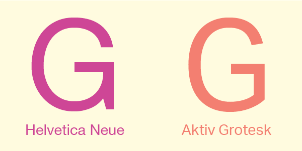
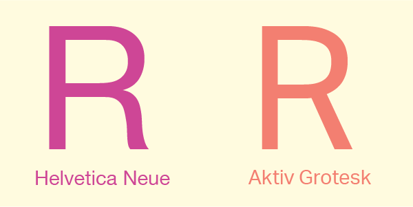
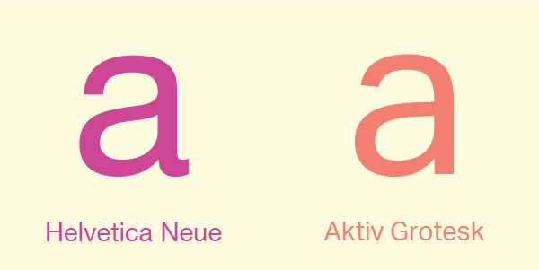
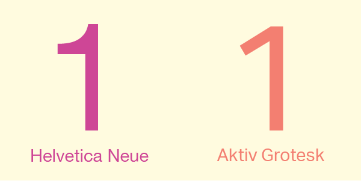
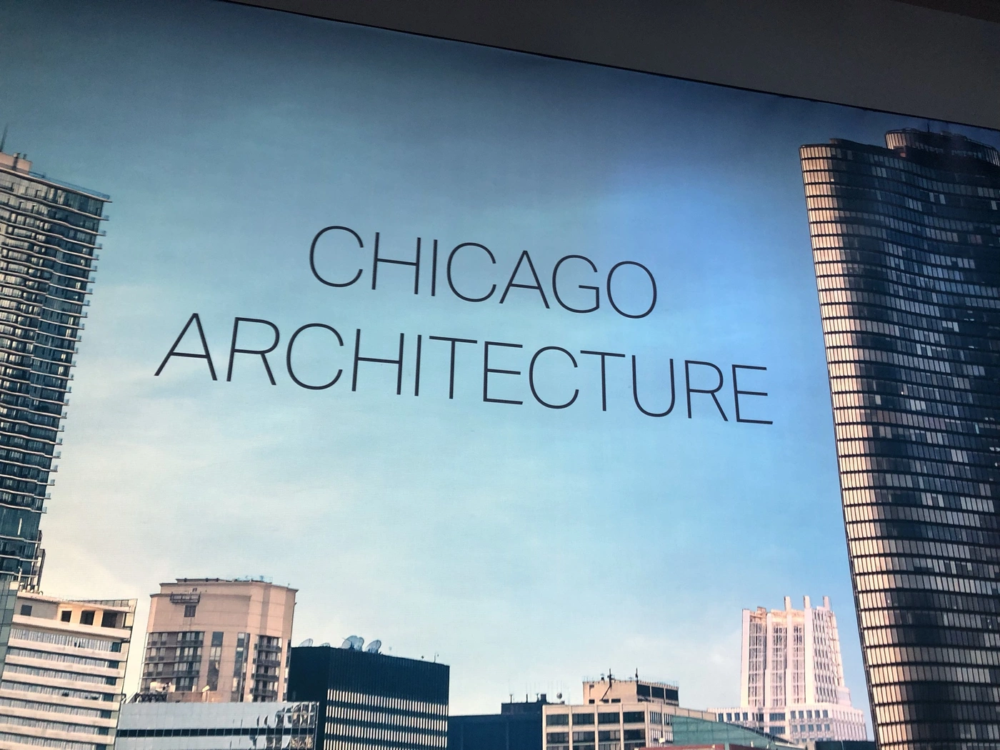
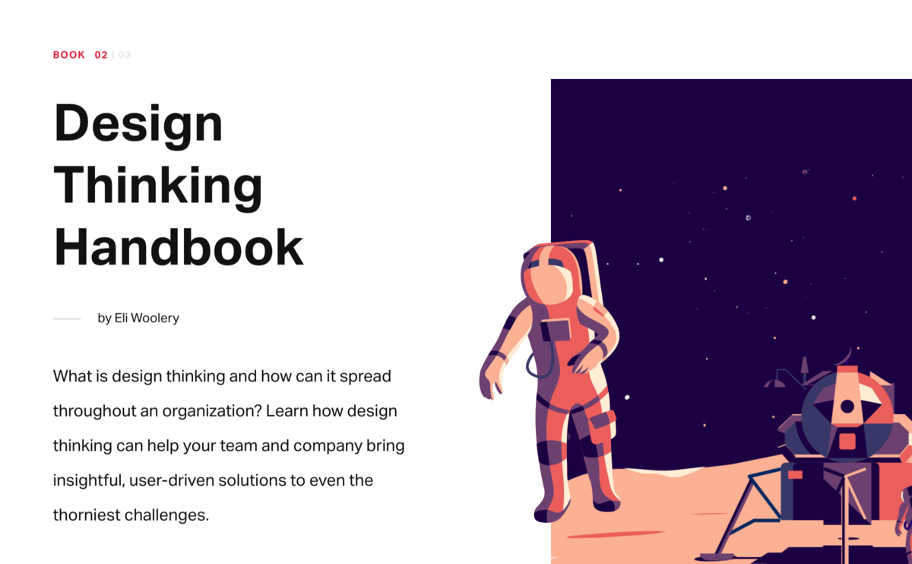
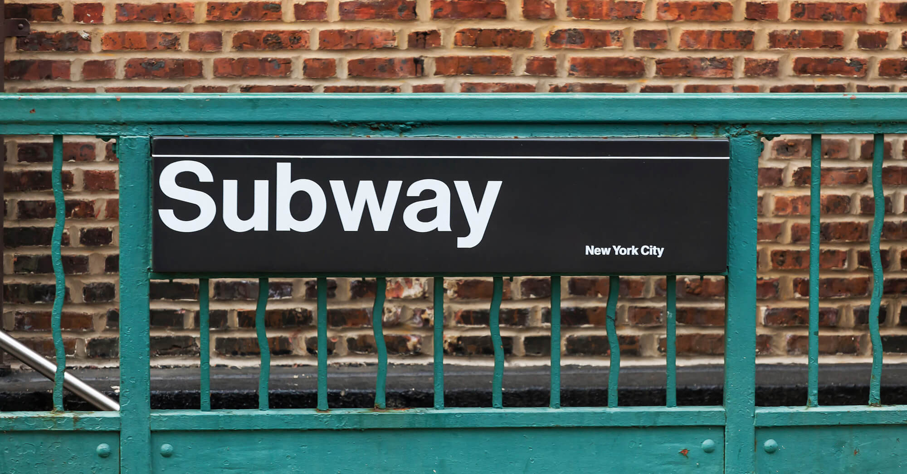

Type Comparison: Aktiv Grotesk vs Helvetica Neue
History
Aktiv Grotesk
In 2010, Dalton Maag created a grotesque san-serif typeface called Aktiv Grotesk. The typeface has been called a “Helvetica Killer” because of its similarities to the Helvetica type family. According to its creator, the font was designed to be “a neutral but authoritative grotesque typeface well-suited for the 21st century”. Aktiv Grotesk is simple and versatile, making it useful for both print and web and ideal for designers with many projects. The typeface was designed with the inspiration of 1950s grotesque fonts but does not have the technical limitations of metal type. The type family includes many different weights ranging from hairline to black and different widths including condensed and extended.
Helvetica Neue
Max Alfons Miedinger began the creation of Helvetica in 1957 after being commissioned by the Haus foundry in Münchenstein, Switzerland. The font was originally called Neue Haas Grotesk and was designed to be very legible and simple. Miedinger created the font as a sans-serif typeface that is balanced and linear. In 1960, the director of the Mergenthaler Linotype Company chose to have Neue Haas Grotesk adapted to be used in their Linotype machines. A designer named Arthur Ritzel redesigned the font family and the new font was renamed Helvetica. The simplicity of the font led it to be used in advertisements including posters and billboards and was used in the late 1960s on signage for the New York Metro. In 1984, Steve Jobs included Helvetica as a font on the first Macintosh, allowing the font to become popular as a digital version.
Comparison
Similarities
- Sans-serif
- Grotesque Style
- Simple, Balanced, Linear, Neutral
Differences
-
Uppercase G
Aktiv Grotesk’s uppercase G glyph connects the end of the counter directly to the end of the crossbar structure with a sharp corner, leaving no spur on the bottom. In contrast, Helvetica Neue’s uppercase G continues to round out the counter, making its connection to the crossbar much higher than that of Aktiv Grotesk and leaving a spur in the bottom right of the glyph./p>
-
Uppercase R
Aktiv Grotesk’s uppercase R glyph is narrower and straighter than that of Helvetica Neue. In Helvetica Neue’s uppercase R, the bowl is significantly wider than that of Aktiv Grotesk, and the
-
Lowercase A
Helvetica Neue’s lowercase a glyph has a spur while Aktiv Grotestk’s does not. The top of the bowl connects to the stem at a sharper angle in the Aktiv Grotesk glyph. The Helvetica Neue glyph’s bowl is curved to connect to the stem. The terminal is parallel to the baseline in Helvetica Neue and is angled slightly in Aktiv Grotesk.
-
Number 1
Helvetica Neue’s number 1 glyph connects the arm to the stem perpendicularly and is curved to meet the top. The Aktiv Grotesk glyph connects the arm and stem at a diagonal angle and is not curved.
Visual Examples
Both typefaces work well for both print and web because they are simple and legible. They are often used for signage, logos, and advertising because of their versatility and functionality.
Aktiv Grotesk
 Helvetica Neue
